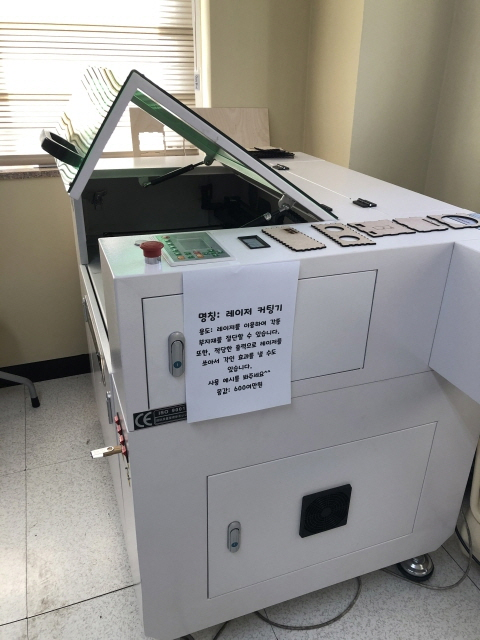
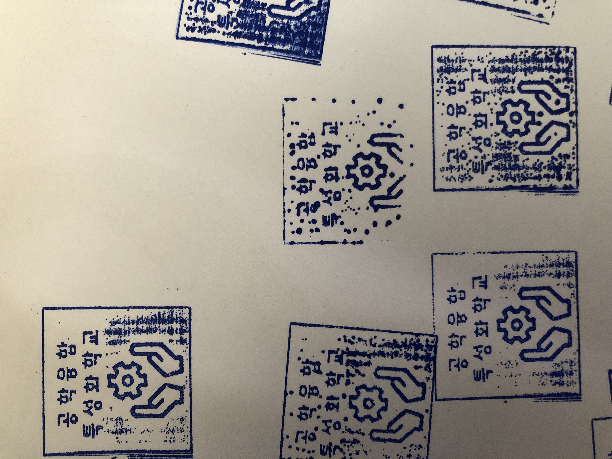

in 마산고등학교
| 3D 프린터 |
보유현황: 밀폐형3대, 오픈형 3대 모델링을 통한 발명 아이디어 시제품 | 활용 예시 | |
이름표 제작 | 시제품 제작 | ||
| 레이저 커팅기 |
보유현황: 1대(규격:600mm*400mm) 레이저를 이용하여 목재,아크릴,고무 등의 재료를 절단 및 각인 작업 | 활용 예시 | |
|  | 스피커 몸체 재단 |  고무 도장 제작 | |
| 목공 장비 |
테이블쏘,각도절단기,드릴링머신 등의 목재 가공 장비 보유 다양한 크기와 주제의 목공품 제작 활동 가능 | 활용 예시 | |
고카트 섀시 제작 |  원목도마 제작 | ||
| 목선반 |
보유현황: 6대 목선반을 활용한 우든펜 제작 및 기타 선반 작업 가능 | 활용 예시 | |
우드펜&만년필 | 우든펜 가공 | ||